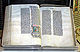
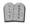

Библия
Материал из Википедии — свободной энциклопедии
| Стиль этой статьи неэнциклопедичен или
нарушает нормы русского языка.
Статью следует исправить согласно стилистическим правилам Википедии.
|
{kind=link}
{kind=link}
Би́блия (греч. βιβλία — мн. ч. от βιβλίον — «книга, сочинение») — собрание священных текстов христиан, состоящее из Ветхого и Нового Завета. Ветхий Завет (Танах) является священным текстом и для иудеев.
Ветхий Завет написан на древнееврейском языке (библейском иврите), за исключением некоторых частей, написанных на арамейском языке. Новый Завет написан на древнегреческом языке — койне.
|
Библия
|
|  |
| Портал Библия |
{kind=link}
{kind=link}
Содержание[убрать] |
[править] Название
{kind=link}
Слово «Библия» в самих священных книгах не встречается и впервые было использовано применительно к собранию священных книг на востоке в IV веке Иоанном Златоустом и Епифанием Кипрским.
Евреи свои священные книги обозначали названиями: «Писания», «Священные Писания», «Завет», «книги Завета», «Закон и Пророки». Христиане новозаветные писания обозначали названиями «Евангелие» и «Апостол».
[править] Состав Библии
Библия состоит из многих частей, объединяемых в Ветхий Завет и Новый Завет.
[править] Ветхий Завет (Танах)
Первая по времени создания часть Библии была заимствована христианством из иудаизма и в оригинале называется Танах; в христианстве она получила название «Ветхий Завет», в отличие от «Нового Завета». Используется также название «еврейская Библия». Эта часть Библии представляет собой собрание книг, написанных на древнееврейском языке задолго до нашей эры и отобранных в качестве священных из прочей литературы древнееврейскими законоучителями. Является Священным Писанием для всех авраамических религий — иудаизма, христианства и ислама, — однако канонизирована только в первых двух названных (в исламе её законы считаются недействующими, а кроме того искажёнными)[источник не указан 415 дней].
Ветхий Завет состоит из 39 книг, в еврейской традиции искусственно считаемых за 22, по числу букв еврейского алфавита, или за 24, по числу букв алфавита греческого. Все 39 книг Ветхого Завета разделяются в иудаизме на три отдела.
- «Закон» (Тора) — содержит Пятикнижие Моисея:
- «Пророки» (Невиим) — содержит книги:
- «Писания» (Ктувим) — содержит книги:
- Иов
- Руфь
- Хваление
- Притчи
- Песнь Песней
- Екклесиаст
- Даниил
- Плач Иеремии
- Ездра и Неемия (считаются одной книгой)
- 1-я и 2-я Летопись (считаются одной книгой)
- Есфирь
Соединяя Книгу Руфь с Книгой Судей в одну книгу, а также Плач Иеремии с Книгой Иеремии, получим вместо 24 книг 22. Двадцать две священных книги считали в своём каноне древние евреи, как свидетельствует Иосиф Флавий. В Танахе порядок следования книг несколько иной.
Все эти книги считаются также каноническими и в христианстве.
| [скрыть]
|
|
|---|---|
| Пятикнижие Торы | Бэ-решит • Шмот • Ва-йикра • Бэ-мидбар • Дварим |
| Пророки | Йешуа • Шофтим • Шмуэль Алеф • Шмуэль Бет • Млахим Алеф • Млахим Бет • Йешайяху • Ирмияху • Йехезкель • Хошеа • Йоэль • Амос • Овадья • Йона • Миха • Нахум • Хавакук • Цфания • Хагай • Зехарья • Мала’хи |
| Писания | Тегилим • Мишлей • Иов • Шир ха-Ширим • Рут • Эйха • Кохэлет • Эстер • Даниэль • Эзра • Нехемия • Диврей ха-ямим (Алеф/Бет) |
{kind=link}
[править] Новый Завет
Вторая часть христианской Библии — Новый Завет, собрание из 27 христианских книг (включающее 4 Евангелия, деяния Апостолов, послания Апостолов и книгу Откровение Иоанна Богослова (Апокалипсис)), написанных в I в. н. э. и дошедших до нас на древнегреческом языке. Эта часть Библии наиболее важна для христианства, в то время как иудаизм боговдохновенной её не считает.
Новый Завет состоит из книг, принадлежащих восьми боговдохновенным писателям: Матфею, Марку, Луке, Иоанну, Петру, Павлу, Иакову и Иуде.
В славянской и русской Библии книги Нового Завета размещены в следующем порядке:
- исторические
- учительные
- Послание Иакова
- Послания Петра
- Послания Иоанна
- Послание Иуды
- Послания Павла
- к Римлянам
- к Коринфянам
- к Галатам
- к Ефесянам
- к Филиппийцам
- к Колоссянам
- к Фессалоникийцам
- к Тимофею
- к Титу
- к Филимону
- к Евреям
- пророческие
В таком порядке размещены книги Нового Завета и в древнейших манускриптах — Александрийском и Ватиканском, Правилах апостольских, Правилах соборов Лаодикийского и Карфагенского и у многих древних Отцов церкви. Но такой порядок размещения книг Нового Завета нельзя назвать всеобщим и необходимым, в некоторых Библейских сборниках встречается другое размещение книг, и теперь в Вульгате и в изданиях греческого Нового Завета Соборные послания помещаются после Посланий апостола Павла перед Апокалипсисом. При том или ином размещении книг руководствовались многими соображениями, но время написания книг не имело большого значения, что нагляднее всего можно видеть из размещения Посланий Павловых. При указанном нами порядке руководствовались соображениями относительно важности мест или церквей, куда были направлены послания: сначала поставлены послания, написанные к целым церквам, а потом уже послания, написанные к отдельным лицам. Исключение — Послание к Евреям, которое стоит на последнем месте не из-за своей низкой значимости, а из-за того, что в подлинности его долгое время сомневались. Руководясь хронологическими соображениями, можно разместить Послания апостола Павла в таком порядке:
- к Фессалоникийцам
- 1-е
- 2-е
- к Галатам
- к Коринфянам
- 1-е
- к Римлянам
- к Филимону
- к Филиппийцам
- к Титу
- к Тимофею
- 1-е
- 2-е
[править] Второканонические книги Ветхого Завета
Септуагинта (греческий перевод Библии) содержит на 11 книг больше, чем еврейская Библия. Среди них книги
- Товит
- Юдифь
- Маккавейские
- Премудрость Соломона
- Сирах
- Варух
- Послание Иеремии
Кроме этого, некоторые отрывки в канонических книгах Септуагинты считаются неканоническими текстами, такие как:
- место в книге Есфири, не обозначенное счётом стихов греческой и славянской Библии;
- молитва Манассии в конце 2-й книги Паралипоменон;
- песнь трёх отроков (Дан.13);
- повесть о Сусанне (Дан.13);
- история о Виле и Драконе (Дан.14).
Этих книг и отрывков в еврейской Библии нет, появились они на греческом языке и в Библию внесены в разное время (возможно также, что на момент перевода Библии на греческий язык еврейские варианты этих книг и отрывков не были известны). Они считаются неканоническими в иудаизме и в протестантизме, тогда как Римско-Католическая и Православная церкви считают их второканоническими. Различные другие древние ортодоксальные церкви включают в свой канон помимо этих книг ещё и 3-ю Маккавейскую книгу, 151 Псалом, Псалмы Соломона, 2-ю и 3-ю Ездры.
Церковь не ставит их наравне с перечисленными выше каноническими, но признаёт их назидательными и полезными. Приведённый выше порядок размещения книг в еврейской Библии изменяется несколько в Септуагинте и Вульгате.
[править] Апокрифы
Еврейские законоучители, начиная с IV в. до н. э., и Отцы Церкви во II—IV вв. н. э., отбирали книги в «Слово Божие» из немалого числа рукописей, сочинений, памятников. Не вошедшее в отобранный канон осталось вне Библии и составляет апокрифическую литературу (от греческого ἀπόκρυφος — скрытый), сопутствующую Ветхому и Новому Заветам.
В своё время деятели древнееврейского «Великого Собрания» (административно-богословского учёного синклита IV—III вв. до н. э.) и последующих еврейских религиозных авторитетов, а в христианстве — Отцы Церкви — со-авторы Библии, немало потрудились, проклиная, запрещая как еретические и расходящиеся с общепринятым текстом, и просто истребляя книги, которые не соответствовали их критериям. Апокрифов сохранилось относительно немного — чуть более 100 ветхозаветных и около 100 новозаветных. Особенно обогатили науку последние раскопки и открытия в районе пещер Мёртвого моря в Израиле. Апокрифы, в частности, помогают нам понять, какими путями шло формирование христианства, из каких элементов складывалась его догматика.
[править] История Библии
{kind=link}
[править] Авторство
| Этот раздел не завершён. Вы поможете проекту, исправив и дополнив его. |
{kind=link}
[править] Написание книг Библии
| Проверить информацию.
Необходимо проверить точность фактов и достоверность сведений,
изложенных в этой статье.
На странице обсуждения должны быть пояснения. |
{kind=link}
| В этом разделе не хватает ссылок на источники
информации.
Информация должна быть проверяема, иначе она может быть
поставлена под сомнение и удалена.
Вы можете отредактировать эту статью, добавив ссылки на авторитетные источники. |
Книги Ветхого Завета
- Бытие 1513 г.д.н. э.
- Исход 1512 г.д.н. э.
- Левит 1512 г.д.н. э.
- Числа 1473 г.д.н. э.
- Второзаконие 1473 г.д.н. э.
- Иисуса Навина ок. 1450 г.д.н. э.
- Судей ок. 1100 г.д.н. э.
- Руфь ок. 1090 г.д.н. э.
- 1-ю и 2-ю Царств, или 1-ю и 2-ю Самуила (считаются одной книгой)ок. 1078—1040 г.д.н. э.
- 3-ю и 4-ю Царств, или 1-ю и 2-ю Царей (считаются одной книгой)580 г.д.н. э.
- 1-ю и 2-ю Паралипоменон, или Хроник (Летописей) (считаются одной книгой) ок. 460 г.д.н. э.
- Ездры и Неемии (считаются одной книгой) ок.460 г.д.н. э.
- Есфири ок. 475 г.д.н. э.
- Иова ок. 1473 г.д.н. э.
- Псалтирь (Псалмы) ок. 460 г.д.н. э.
- Притчи Соломоновы ок. 717 г.д.н. э.
- Екклесиаста до 1000 г.д.н. э.
- Песнь Песней ок. 1020 г.д.н. э.
- Исаии после 732 г.д.н. э.
- Иеремии 580 г.д.н. э.
- Плач Иеремии 607
- Иезекииля ок. 591 г.д.н. э.
- Даниила ок. 536 г.д.н. э.
- Осии после 745 г.д.н. э.
- Иоиля ок. 820 г.д.н. э.
- Амоса ок. 804 г.д.н. э.
- Авдия ок. 607 г.д.н. э.
- Ионы ок. 844 г.д.н. э.
- Михея до 717 г.д.н. э.
- Наума до 632 г.д.н. э.
- Аввакума ок. 628 г.д.н. э.
- Софонии до 648 г.д.н. э.
- Аггея 520 г.д.н. э.
- Захарии 518 г.д.н. э.
- Малахии после 443 г.д.н. э.
Итого Еврейские писания (Ветхий Завет) написан с 1513 г.д.н. э. по 443 г.д.н. э.
Греческие писания (Новый Завет) написан с 41г. н. э. по 98г. н. э.[источник?]
Всего Библия записывалась около 1600 лет.
[править] Текст Библии
У евреев было достаточно и средств, и верности сохранить текст священных книг от важных искажений не только по содержанию, но иногда по форме, по языку. Правда, со времени плена Вавилонского первоначальный еврейский язык значительно испортился, вышел из употребления, стал непонятным народу, и сами евреи стали говорить по-арамейски. На этом языке толковали народу закон, непонятный уже в первоначальном тексте (Неемия 8, 1—8, ср. 13, 23—25). Но древний еврейский язык, не употребляемый в обыкновенном разговоре, остался языком религии, священных книг и литературы. Пророки, жившие после плена, писали на языке древнееврейском.
Известно, что со времён плена евреи особенно привязались ко всему национальному, к своей древности и до мелочности стали охранять все древние свои обычаи и обряды. Эта верность проявилась прежде всего в сфере религиозной и была приложена к охранению главной святыни евреев — священных книг.
В первом веке, по разрушении Иерусалима римлянами, учёные евреи переселились в Тивериаду, и здесь образовалась знаменитая раввинская академия, почитаемая всеми иудеями. Со второго века здесь возникло общество талмудистов, людей, изучавших и толковавших Священное Писание. Они сличили рукописи, очистили текст от ошибок, вкравшихся со времён Ездры, и установили единообразный род письма для свитков Священного Писания. Они сосчитали даже число слов и букв в каждой священной книге, например в книге Бытия 20780 слов и 78100 букв. Такая работа, конечно, способствовала охранению текста священных книг от искажений и ошибок переписчиков. Несмотря на то, что в то время не было ещё гласных и других знаков, во II и III в. талмудисты имели текст книг, весьма близкий к настоящему. Во всех чтениях того времени находится только 220 вариантов, притом неважных и незначительных.
После талмудистов для библейского текста весьма многое сделали масореты в V веке. Древний еврейский язык, как арабский, сирский и халдейский, не имел знаков для означения гласных звуков, и, кроме того, в древности не употребляли никаких знаков препинания. Когда язык был живым, правильному чтению помогали предание и навык. Но теперь, когда в обычной речи употреблялся другой язык и в рукописях появились разности и погрешности, настала необходимость самым начертанием текста предохранить его от разночтений; сверить рукописи, определить твёрдо текст и предохранить его по возможности на будущее время от искажений. Этим и занялись учёные раввины, по своему труду носящие название масоретов, то есть изъяснителей. Они над всеми словами поставили гласные знаки, собрали и сличили древние рукописи и древние толкования, установили размеры и пунктуацию стихов и пересчитали число стихов и даже букв в книгах. Совокупность всех таких работ над текстом составляет великую Масору, и извлечение из неё называется малой Масорой.
Эти труды над еврейским текстом, начатые в V в., продолжались с усердием и в последующие века. Евреи сделали всё возможное для сохранения священного текста в целости и неповреждённости. Согласие дошедших до нас рукописей служит внушительным доказательством неповреждённости ветхозаветного текста по крайней мере в главном и существенном.
[править] История канона Библии
Считается, что канонические книги Ветхого Завета были собраны воедино «богодухновенным» писателем, книжником Ездрой, жившим приблизительно за 450 лет до н. э., а оба Завета были впервые сведены в каноническую форму на соборе, который состоялся в Карфагене в 397 г. (по другим источникам, Лаодикийским собором 363 г.). Документов этих соборов не сохранилось, но доподлинно известно, что уже в V веке Библия делилась на Ветхий и Новый Завет.
Первый, документально подтверждённый канон установлен лишь со времени нового Тридентского собора, созванного во время Реформации в 1545 году и длившегося до 1563 года. По распоряжению этого собора была уничтожена масса книг, признанных апокрифическими, в частности, «Летописи о царях иудейских и израильских».
[править] Рукописи Библии
Наиболее древними рукописями Нового Завета считаются кодексы:
- Александрийский кодекс (лат. Codex Alexandrinus), хранится в библиотеке Британского музея
- Ватиканский кодекс (лат. Codex Vaticanus), хранится в Риме
- Синайский кодекс (лат. Codex Sinaiticus), хранится в Оксфорде, ранее — в Эрмитаже
Все они датируются (палеографически, то есть на основании «стиля почерка») IV в. н. э. Язык кодексов греческий.
В XX веке широкую известность приобрели Кумранские рукописи, обнаруженные, начиная с 1947 г., в ряде пещер Иудейской пустыни и в Масаде.
[править] Деление на главы и стихи
Древний ветхозаветный текст не имел делений на главы и стихи. Но очень рано (вероятно, после плена Вавилонского) для богослужебных целей появились некоторые деления. Древнейшее разделение Закона на 669 так называемых параш, приспособленных к общественному чтению, встречаем в Талмуде; деление теперешнее на 50 или 54 параш ведёт начало со времени Масоры и в древних синагогических списках не встречается. Также в Талмуде уже находятся деления пророков на гофтары — конечные отделы, такое название усвоено потому, что читались в конце богослужения.
Деления на главы христианского происхождения и сделаны в XIII в. или кардиналом Гугоном, или епископом Стефаном. При составлении конкорданции на Ветхий Завет Гугон для удобнейшего указания мест разделил каждую книгу Библии на несколько малых отделений, которые обозначил буквами алфавита. Принятое ныне деление было введено Кентерберийским епископом Стефаном Лангтоном (умер в 1228 г.). В 1214 г. он разделил на главы текст латинской Вульгаты, и это деление было перенесено в еврейский и греческий тексты.
Потом в XV в. раввин Исаак Натан при составлении конкорданции на еврейском языке разделил каждую книгу на главы, и это деление до сих пор удержано в еврейской Библии. Деление поэтических книг на стихи дано уже в самом свойстве еврейского стихосложения и потому очень древнего происхождения; оно встречается в Талмуде. Впервые Новый Завет был разделён на стихи в XVI в.
Стихи были пронумерованы вначале Сантесом Панино (умер в 1541 г.), затем, около 1555 г. — Робером Этьеном. Существующая ныне система глав и стихов впервые появилась в английской Библии 1560 года. [1] Деление не всегда логично, но от него уже поздно отказываться, тем более что-либо менять: за четыре века оно осело в ссылках, комментариях и алфавитных указателях.
[править] Библия в религиях мира
[править] Иудаизм
[править] Христианство
Если 27 книг Нового Завета едины для всех христиан, то во взглядах на Ветхий Завет у христиан есть крупные разногласия.
Дело в том, что там, где в книгах Нового Завета цитируется Ветхий Завет, эти цитаты чаще всего приводятся по греческому переводу Библии III—II вв. до н. э., именуемому, благодаря легенде о 70-ти переводчиках, Септуагинтой (по-гречески — семьдесят), а не по древнееврейскому тексту, принятому в иудаизме и именуемому учёными масоретским (по названию древних еврейских библеистов-богословов, упорядочивавших священные рукописи).
По сути, именно список книг Септуагинты, а не поздний «очищенный» сборник масоретов, стал традиционным для Древней Церкви как сборник книг Ветхого Завета. Поэтому все Древние Церкви (в частности, Армянская апостольская церковь) почитают равно благодатными и богодухновенными все книги Библии, которые читали апостолы и сам Христос, в том числе и именуемые в современной библеистике «второканоническими».
Католики так же, доверившись Септуагинте, приняли эти тексты в свою Вульгату — раннесредневековый латинский перевод Библии, канонизированный западными вселенскими соборами, и приравняли их к остальным каноническим текстам и книгам Ветхого Завета, признав в равной с ними степени богодухновенными. Эти книги известны у них как девтероканонические, или второканонические.
Православные же включают 11 второканонических книг и вставки в остальные книги в Ветхий Завет, но с примечанием, что они «дошли до нас на греческом языке» и не являются частью основного канона. Вставки в канонические книги они ставят в скобки и оговаривают примечаниями.
Реформация XVI в. н. э., отбросив многие нормы раннего христианства, предпочтя мнению Древней Церкви канон масоретов, отвергла и внесение в Ветхий Завет не сохранившихся на древнееврейском языке книг и частей книг. Современные протестантские вероучения основывают свои тезисы на масоретской Библии. Отсутствующие 11 книг из неканонической Библии поощряются к прочтению, хотя они и не считаются вдохновлёнными самим Богом. Англикане также печатают часть неканонических книг в Библиях для чтения верующими.
[править] Ислам
Ислам считает Ветхий Завет (арабский Таурат — Тора) и Новый Завет (арабский Инджиль — Евангелие) искажёнными позднейшими переписчиками, однако признаёт их изначальную святость, и персонажи обеих частей Библии (например, Ибрахим (Авраам), Муса (Моисей), Юсуф (Иосиф), Иса (Иисус)) играют в исламе (начиная с Корана) важную роль.
[править] Переводы Библии
По информации Германского Библейского общества (24 февраля 2005), Библия полностью или частично переведена на 2377 языков народов мира, полностью издана на 422 языках.
В 382 г. Иероним Стридонский перевёл Ветхий Завет с греческого на латинский; в переводе Ветхого Завета Иероним основывался на Септуагинте. Этот перевод стал известен как Вульгата — Editio Vulgata (vulgatus означает «широко распространённый, общеизвестный»).
В 405 г. великий просветитель Армении — святой Месроп Маштоц вместе со своими учениками перевёл всю Библию на современный тогда армянский, ныне древнеармянский язык (грабар), который по ныне является официальным языком Святой Армянской Апостольской Церкви, и назвал её Աստուածաշունչ մատեան (дословно «Богодухновенное писание»). Ветхий Завет (Հին Կտակարան) и Новый Завет (Նոր Կտակարան) переводились с греческого (Септуагинта) и сирийского (Пешитто). За высокие литературные достоинства армянский перевод называют «королевой переводов».
К 500 г. Библия была переведена более чем на 500 языков, а столетие спустя, в 600 г., использование Библии в Западной Европе было ограничено лишь Вульгатой. Это связано с доминированием Римской католической церкви, продлившимся около 1000 лет и известным как Средние века.
В 1380 г. профессор Оксфорда Джон Виклиф сделал первые рукописные переводы Вульгаты на английский язык. Один из последователей Виклифа Ян Гус активно проповедовал его идеи: что люди должны сами читать Библию на своём языке. За такие речи в 1415 г. Гус был сожжён на костре по обвинению в ереси, для растопки использовав перевод Библии Виклифа.
В 1450 г. Иоганн Гутенберг изобрёл книгопечатание и для начала напечатал Библию на латинском. В 1517 г. Мартин Лютер — идеолог Реформации, — сформулировал свои знаменитые 95 тезисов и перевёл Библию на немецкий.
[править] Церковнославянский перевод
В IX веке Библия была переведена на язык, понятный восточным славянам. Перевод был предпринят братьями-миссионерами Кириллом и Мефодием — «первоучителями и просветителями славянскими». Их родным языком предположительно мог быть вариант старо-болгарского языка, на котором разговаривали в их родной Солуни; воспитание же и образование они получили греческое. Перевод Библии на славянский язык Кирилл и Мефодий осуществили с помощью составленной ими славянской азбуки — глаголицы; позже была создана кириллица на основе греческого алфавита.
Списки с кирилло-мефодиевского перевода распространились среди восточных славян, что способствовало крещению Руси. Не сохранилось ни одного экземпляра какого-либо библейского текста с первоначальным переводом Кирилла и Мефодия; однако, без сомнения, он имел влияние на все последующие.
Со временем в переписываемых от руки книгах Библии накапливались ошибки, пропуски, толкования и вставки с целью ясности, замены болгарских слов русскими аналогами и т. п. Некоторые священные книги бесследно исчезли. Поэтому митрополит Алексий (1332—1378 гг.), в бытность свою в Константинополе, запасся греческими списками Нового Завета и по ним составил весь перевод на славянский язык. Много исправлений внёс митрополит Киприан, серб по происхождению (1378—1406 гг.). Некоторые книги переводились даже с еврейского текста (по распоряжению митрополита Филиппа).
В XV веке архиепископ Геннадий поставил задачу собрать книги Священного Писания в единую Библию на славянском языке. Он организовал поиск частей славянской Библии по монастырям и соборам. Часть книг найти не удалось, и их перевёл с латинской Вульгаты монах Вениамин. Экземпляр Геннадиевской Библии сохранился до наших дней. Ныне используемая православной церковью в богослужении в России и других славянских странах Библия отличается от текста Геннадия лишь мелкими (но многочисленными) исправлениями.
На протяжении столетий русский язык развивался и изменялся, но славянский перевод Библии в течение многих веков по-прежнему оставался в употреблении.
С появлением на Руси книгопечатания книги Священного Писания стали печатать на церковно-славянском языке.
В 1564 году основатель типографского дела в России «первопечатник» Иван Фёдоров издаёт книгу «Апостол», в которую вошли Писания Нового Завета: Деяния Апостолов и их Послания. Эта книга на церковно-славянском языке была первой напечатанной в России.
А в 1581 году впервые была напечатана полная церковно-славянская Библия. В тексте её, однако, иногда встречались ошибки и неточности. В последующих изданиях ошибки эти старались исправлять.
По указу императрицы Елизаветы в 1751 году была издана тщательно исправленная церковнославянская Библия, так называемая «Елизаветинская», текст которой был сверен с древним греческим переводом — Септуагинтой. Елизаветинская Библия, с незначительными правками графического характера, до сих пор используется как авторизованный для богослужения текст в русском православии.
[править] Краткая история русского перевода Библии
- См. также Синодальный перевод
- См. также Перевод Библии архимандрита Макария
{kind=link}
В первой половине XVI века уроженец Полоцка, доктор медицины Франциск Скорина переводит все книги Ветхого Завета на современный ему белорусский язык. Перевод, сделанный им с латинской Библии Иеронима, был напечатан в 1517—1525 годах в Праге и Вильне.
В 1703 году царь Пётр I принимает решение издать Новый Завет на русском языке. Он поручает перевод его немецкому пастору Глюку, известному своими филологическими трудами. Работая в Москве, пастор Глюк заканчивает перевод. Но в 1705 году пастор Глюк скончался, и после его смерти оставленный им перевод исчез. Некоторые историки считают[источник не указан 415 дней], что перевод этот был похищен и уничтожен противниками распространения Священного Писания на понятном народу языке, боявшимися, что это послужит причиной реформации в России.
В 1813 году произошло важное событие в духовной жизни России: было основано Российское библейское общество, поставившее своей целью печатание и распространение книг Священного Писания среди народов страны. Было решено продавать их по низкой цене и бесплатно раздавать неимущим. В 1815 году, после возвращения из-за границы, император Александр I повелел «доставить и россиянам способ читать Слово Божие на природном своём российском языке». Вновь был поставлен вопрос о русском переводе Библии.
Ответственность за издание книг Священного Писания на русском языке взяло на себя Российское библейское общество, перевод был поручен членам Петербургской духовной академии.
В 1818 году первое издание четырёх Евангелий параллельно на русском и церковнославянском языках вышло из печати, а в 1822 году впервые был полностью напечатан русский Новый Завет. Затем стали переводить и печатать книги Ветхого Завета. Одновременно делались переводы Священного Писания и на языки других народов Российской империи.
Некоторые представители высших церковных властей отрицательно относились к деятельности Библейского общества. Они считали, что Библия должна находиться в руках духовенства и что не следует давать возможность народу читать и изучать её самостоятельно. В 1824 году митрополит Серафим просит царя запретить Библейское общество. В апреле 1826 года по указу императора Николая I деятельность общества была прекращена. К этому времени типография Русского библейского общества успела напечатать около миллиона экземпляров книг Священного Писания на 26 языках народов России.
После запрета деятельности Общества приостановилась работа над русским переводом Библии. Вскоре была прекращена продажа русского Нового Завета.
Однако первенствующий Московский митрополит святитель Филарет (Дроздов) в 1858 году всё же добился у царя разрешения на перевод и печатание Священного Писания на русском языке. Перевод осуществлялся под руководством Синода (высшего управления Русской Православной Церкви).
Была проделана большая работа для того, чтобы русский перевод книг Священного Писания как можно больше соответствовал текстам древних подлинников, а также обладал литературными достоинствами.
В 1862 году, сорок лет спустя после первого издания русского Нового Завета, было выпущено в свет второе его издание, несколько улучшенное, на более современном русском языке.
Решено было заново тщательно подготовить перевод всех книг Ветхого Завета. Для этого в 1860 году был избран специальный комитет при Петербургской духовной академии. Перевод Ветхого Завета делали профессора Петербургской духовной академии: М. А. Голубев, Е. И. Ловятин, П. И. Савваитов — известный археолог и историк, Д. А. Хвольсон — христианин еврейского происхождения, профессор Петербургской духовной академии. Много потрудился над переводом также профессор Киевской духовной академии М. С. Гуляев.
Перевод Ветхого Завета осуществлен с древнееврейского (масоретского) текста Библии, а Нового Завета — с греческого. Переводчики руководствовались также греческим текстом Септуагинты, пользовались латинским переводом Иеронима и ранее сделанным русским переводом.
В 1876 году впервые вышла из печати полная русская Библия. Текст её иногда называют «синодальным», так как она была издана под руководством Синода. Произошло это почти три века спустя после появления первоначальной церковно-славянской Библии.
Язык русской Библии обладает несомненными литературными достоинствами. Благодаря его эмоциональности, ритму, русский перевод близок по форме к стихотворениям в прозе.
Издание русской Библии было важным событием в истории русского христианства и русской культуры.
Несмотря на очевидный успех перевода Библии на русский язык, русский текст Священного Писания не смог вытеснить прежний славянский, который до сих пор употребляется в Церковном богослужении во всех храмах Русской Православной Церкви. Преимуществом славянского текста (помимо традиционности) считается его большая поэтичность — певучесть, облагороженность — возвышенность и почти буквальный перевод текста с сохранением древнегреческой его структуры — приближённость к Септуагинте, текст Которой в меньшей степени повреждён (в том числе, важные мессианские места), чем масоретский, с которого переводили на русский.
В 1842 году миссионерское общество Базеля опубликовало в Лондоне Евангелие от Матфея в переводе Мирза Фаррух и Феликса Зарембы. В 1878 году полный текст Нового Завета был переведён и издан в Лондоне. Ветхий Завет вышел в 1891 году. В 1982 году Институт по переводу Библии (Institute for Bible Translation) в Стокгольме, Швеция выпустила новый перевод (переводчик: Мирза Хазар) на современном азербайджанском языке полный текст Нового Завета, который используется в настоящее время в Азербайджане. Данный перевод переиздавался пять раз в последующие годы. Мирза Хазар завершил перевод Ветхого Завета в 1984 году, но его перевод не был напечатан. Новый Завет в новом переводе был издан в 1998 году, а Ветхий Завет в 2004 году. [2]
[править] Священное Писание — Перевод нового мира
«Священное Писание — Перевод нового мира» — перевод Библии, который был издан свидетелями Иеговы и широко используется в их религиозной деятельности, но не принят подавляющим большинством христианских конфессий. Новый Завет в этом переводе называется «Христианские Греческие Писания» или «Греческие Писания», а Ветхий Завет — «Еврейско-арамейские Писания» или «Еврейские Писания».
[править] См. также
[править] Ссылки
- Переводы Библии на древние языки
- Переводы Библии на церковно-славянский язык
- Переводы Библии на русский язык
- Переводы Библии на новые европейские языки
- Переводы Библии на восточные языки
[править] Библейские персонажи
- Статьи об отдельных персонажах см. в Категория:Библейские персонажи
Список библейских персонажей состоит более чем из 1000 имён [3].
[править] Науки и учения, связанные с Библией
- Библеистика
- Герменевтика
- Исагогика
- Каббала
- Онтология
- Религиоведение
- Схоластика
- Теология
- Экзегетика
- Эсхатология
[править] См. также
- Ветхий Завет
- Новый Завет
- Апокрифы
- Библия-Центр
- Танах — еврейская Библия
[править] Литература
- Энциклопедический словарь Брокгауза и Ефрона: В 86 томах (82 т. и 4 доп.). — СПб.: 1890—1907.
- Макдауэлл, Джош. Свидетельства достоверности Библии: повод к размышлениям и основание для принятия решения: Пер. с англ. — СПб.: Христианское общество «Библия для всех», 2003. — 747 с. — ISBN 5-7454-0794-8, ISBN 0-7852-4219-8 (en.)
- Дойель, Лео. Завет вечности. В поисках библейских манускриптов. — СПб.: «Амфора», 2001.
- Нестерова О. Е. Теория множественности «смыслов» Св. Писания в средневековой христианской экзегетической традиции // Жанры и формы в письменной культуре Средневековья. — М.: ИМЛИ РАН, 2005. — С. 23-44.
- Крывелев И. А. Книга о Библии. — М.: Издательство социально-экономической литературы, 1958.
[править] Сноски и источники
- ↑ Г. Гече. Библейские истории. ИПЛ. М. 1988. стр. 20-21,13.
- ↑ Bible translations by language
- ↑ Библейско-биографический словарь, или Жизнеописания всех лиц, упоминаемых в Священных книгах Ветхого и Нового Заветов, и других имевших какое-либо влияние на распространение Церкви Божией на земле / Сост. Ф. И. Яцкевич, П. Я. Благовещенский. — М.: ФАИС-ПРЕСС, 2001. — 912 с.: ил. — ISBN 5-8183-0201-6
[править] Ссылки
|  | Портал «Библия» |
|---|---|
| библия в Викисловаре? | |
| Библия в Викицитатнике? | |
| Категория:Библия в Викитеке? | |
| Категория:Bible на Викискладе? | |
| Проект «Библия» |
[править] Тексты и переводы Библии
- История Библии
- Более 25 переводов Библии и ее частей и быстрый поиск по всем переводам. Возможность создавать гиперссылки на места в Библии. Возможность прослушать текст любой из книг.
- Библия на 60 языках
- Буквальный перевод с греческого некоторых книг Нового Завета на русский язык*
- Обзор русских переводов Библии (c возможностью скачать)
- «Твоя Библия» — русский Синодальный перевод с поиском и сравнением версий (украинский перевод Ивана Огиенко и английский King James Version
- Подстрочный перевод Библии с греческого языка на русский
- Текст Ветхого и Нового Заветов на русском и церковнославянском языках
- Параллельные тексты Библии на многих языках
- Библия на algart.net — online-текст Библии с перекрестными ссылками, в том числе полная Библия на одной странице
- Электронная Библия и апокрифы — многократно выверенный текст Синодального перевода
- Суперкнига — один из наиболее полных сайтов по Библии с нетривиальной, но очень мощной навигацией
- Библия на bibleserver
- Поиск «Богослова» в текстах «Нового Завета»
- Библия в формате Windows-справки — Библия в формате Windows HTML HELP (*.chm файл)
- Библия с номерами Стронга, параллельными местами, современным и синодальным переводами, комментариями Баркли, возможностью оставлять комментарии в интернете и снабженной удобной системой навигации
- Священное Писание — Перевод нового мира
- Библия на иврите, арамейском, греческом, латинском, английском, немецком, церковно-славянском, русском языках. Унциальные рукописи Нового Завета в формате pdf
- Библияна русском языке с удобной навигацией для чтения.
[править] Переводы Танаха (Еврейской Библии)
- Еврейская Библия по-русски
- Перевод Еврейской Библии с комментариями Раши
- Танах в переводе Мосад Рав Кук
[править] Толкование и изучение
- «Библия-Центр» — интернет-центр изучения Библии
- Большой каталог проповедей мп3
- Толковая Библия, или Комментарий на все книги Св. Писания Ветхого и Нового Заветов А. П. Лопухина
- Тематический классификатор по посланиям апостолов
- Библия со святоотеческими толкованиями — текст Библии с построчными святоотеческими толкованиями
- Свенцицкая И., Трофимова М. Апокрифы древних христиан (Электронная Библиотека апокрифов)
- Библейская Энциклопедия. Труд и издание Архимандрита Никифора. Москва. 1891. (Поиск толкования слов и их употребления в Библии)
- Конспект Библии
- О развитии библеистики в России и толковании Библии проф. А.П. Лопухиным
[править] Критика
[править] Софт и Библия для мобильных
- Библия для iPhone / iPod Touch (ссылка в Apple Store)
- Веб-сайт программы «Цитата из Библии»
- Цитата из Библии (ПО) — страница Википедии
- Каталог модулей, созданных для программы «Цитата из Библии»: переводы Библии на разные языки, словари, комментарии, электронные книги по изучению Библии и христианства
- «Цитата из Библии» On-line для ПК, КПК и мобильных телефонов
- Библия на мобильном телефоне, смартфоне, коммуникаторе (MDA) или на карманном компьютере (PDA)
- Библия для мобильного устройства с номерами Стронга, параллельными местами, современным и синодальным переводами, комментариями Баркли, возможностью оставлять комментарии в интернете и снабженной удобной системой навигации
- jBible — Java-Библия: программа, обеспечивающая работу с текстом Библии (чтение, закладки, поиск) в мобильных телефонах.
- WAP-Библия: сайт с Библией, доступный по протоколу WAP (с мобильного телефона).
- Многофункциональная программа по работе с Библией на мобильном телефоне. Программа обеспечивает несколько режимов чтения и тестирования знаний Писания.
- Библия в формате mp3.Библия в музыкальном сопровождении. Ветхий и Новый завет на одном DVD диске.
[править] Остальные
- Библейские словари — объяснение библейских терминов, словарь Вихлянцева, энциклопедия Никифора и тематический словарь NIV
- Сборник ссылок на различные канонические тексты и апокрифы
- Библейские сюжеты на старинных открытках на сайте Одесского музея нумизматики
- Latin-English Study Bible (англ.)
- Библейские истории на Притчи.ру
|
|
Для улучшения этой статьи желательно?:
|